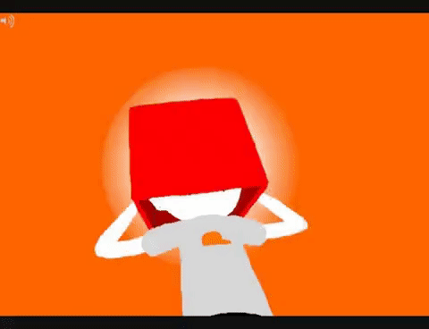

To start off on Dirk’s tendencies, the biggest that comes to mind is his suicidal ones. On multiple occasions, he has voluntarily decapitated himself so often that it has become a running gag within the fan base (see pages 5238, 8087 and the credits).  Dirk teeters constantly on the line between life and death, in a way just waiting for a breeze to push him one way or the other. He consistently views his life as a puppeteer of sorts, statements like “If it puts your mind at ease, I'll be the one pulling the strings here.” are ways of speech unique to him. Dirk seems to have a high interest in teaching people lessons under the pretext of making them stronger, aiding in their personal development. To others, this behaviour tends to come off as obnoxious, though he is trying his hardest in the best way he knows how. He also seems to hold a lot of self-hatred, and mixed with further events in the story, which will be addressed later, only adds to the reasons why. More specifically, to other versions of himself from other timelines. He feels immense responsibility for alternate or “splintered” variations of himself when it is literally impossible to have any control over them. His auto-responder can also be evidence of self-loathing. Dirk would prefer not to subject anyone to his actual self, telling Hal “Do you have any idea how f****** sick I am of myself?”, implying that he’s aware of how his friends see him (true or otherwise). This compounds with his suicidal tendencies and an incredible lack of permanence in the world. According to the National Society for the Prevention of Cruelty to Children (NSPCC), the effect of childhood neglect on development as an adolescent include “problems with brain development, taking risks, like running away from home, using drugs and alcohol or breaking the law, getting into dangerous relationships, difficulty with relationships later in life, including with their own children, a higher chance of having mental health problems, including depression.” all of which Dirk has or would have exhibited if he lived in a functioning society (in reference to breaking the law), although alcohol is excluded as he has “always found inebriation to be distasteful, really. Never understood the personal appeal of it.” (meat epilogue page 38) This can be attributed to alcoholism running in his family, both with (again, to put it simply and without going into ectobiology) his daughter Rose and with Roxy.
Dirk’s deprivation, occurring his entire life, in contrast with his genius-level intelligence led to severely impaired social skills. This is supported by Harvard University, where a few effects of neglect are listed as “significant risk for emotional and interpersonal difficulties, including high levels of negativity, poor impulse control, and personality disorders.” Dirk shows telltale signs of developing on his own and without any in-person contact besides robots until around his thirteenth birthday, give or take a year or two since it’s never canonically established when he meets the other Alpha kids. His need for control can also be attributed to growing up in this type of environment, considering how little he had in some of the most impressionable and important years of his development. He also tends to receive suffering around him as a personal failure on his part. An inability to control his peers, even in a positive way, makes him feel helpless, just like his first memories, landing in the middle of an ocean at a very young age and trying to find safety. Though he may not consciously be thinking about that experience when he craves control, the brain operates in such a way that anything that replicates a traumatic event sends him into damage control. Dirk, above all else, is a kind and compassionate person but is struggling with a crippling lack of self-esteem and unintentional suicidal tendencies.